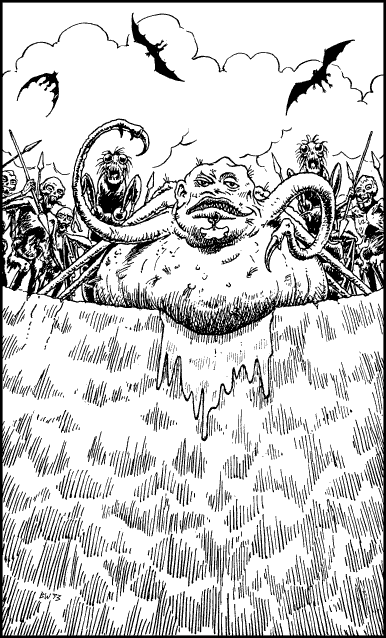

290
The net spills open as it touches the ground beside the yawning pit, enabling you quickly to disentangle yourself and unsheathe a weapon. Freed from the net but still trembling from the residual effects of psychic shock, you drop to one knee to steady yourself as you try to assess your situation. You look around for a way to escape from this alien settlement but all that you can see is an encircling wall of hideous humanoid mutants and ant-creatures. A tight wedge, comprising a dozen of these creatures, gibbers excitedly as it rushes forwards with frightening speed. You attempt to stand and meet their attack, but they hit you before you are fully upright and knock you headlong into the pit.
Cursing your luck, you struggle to your feet amongst a deep carpet of bones and look up at the rim of the pit, some fifteen feet above. An unbroken line of ghastly faces are shrieking and staring back at you with unconcealed glee. Suddenly, the faces fall silent and a gap appears in their ranks to allow access to their hideous leader. You swallow hard to suppress the rising nausea you feel upon seeing this creature’s grotesque features. Its body resembles a huge bloated bubble, endowed with a misshapen humanoid face, like that moulded by a child from wet clay. Its pustulant raw skin is studded with warts and tufts of rust-coloured hair. Chuckling maniacally, it drags itself around the edge of the pit by means of six claw-tipped tentacles and you note, with disgust, that it leaves a trail of steaming grey slime wherever it passes. Through its bulbous lower lip there hangs a chain to which is attached an amulet, seemingly crafted of iron. You magnify your vision and see that an inscription on this crude amulet bears the name ‘Nza’pok’. Instantly you recall the text of the Tome of Darkness and realize that this creature must be Nza’pok himself, the ruler of this territory within the Plane of Darkness.

Nza’pok opens his crooked mouth to reveal several rows of rotting jagged teeth. Then words of the Dark Tongue rumble from his gullet to send shivers down your spine. You suspect that he is commanding his followers to slay you and your worst fears are confirmed when you witness spears being passed overhead to the front ranks of his chaos-horde. The humanoids snatch them up in their twisted hands and raise them in readiness to hurl at you upon the word of command from their hellish leader.
If you possess Magi-magic and wish to use it, turn to 43.
If you possess Kai-alchemy and wish to use it, turn to 184.
If you possess neither of these Disciplines or choose not to use them, turn to 71.